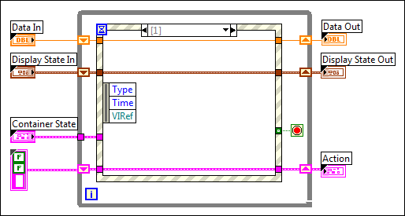

An event case has been added to an Event structure that is not available on a standard VI.
The following example displays an Event structure in a standard VI intended for a Facade VI. Notice that the event case is blank.
To correct this error, select the event case that is unavailable. Right-click the Event structure and select Delete This Event Case from the shortcut menu.